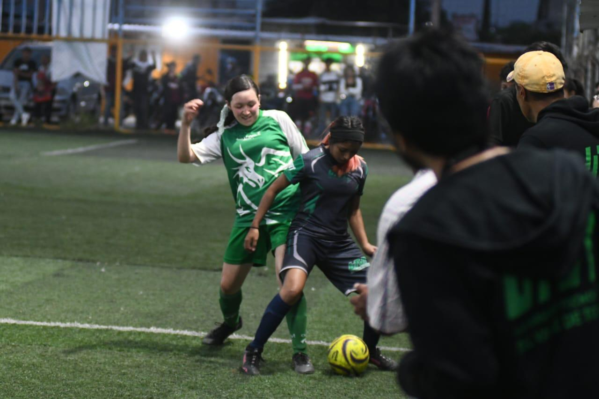
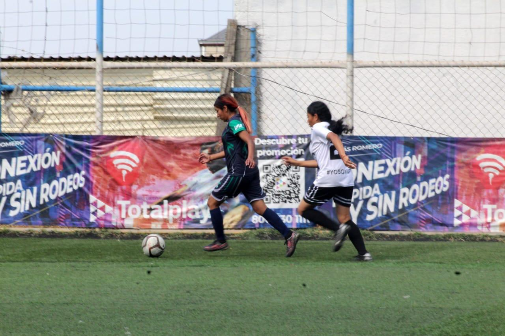
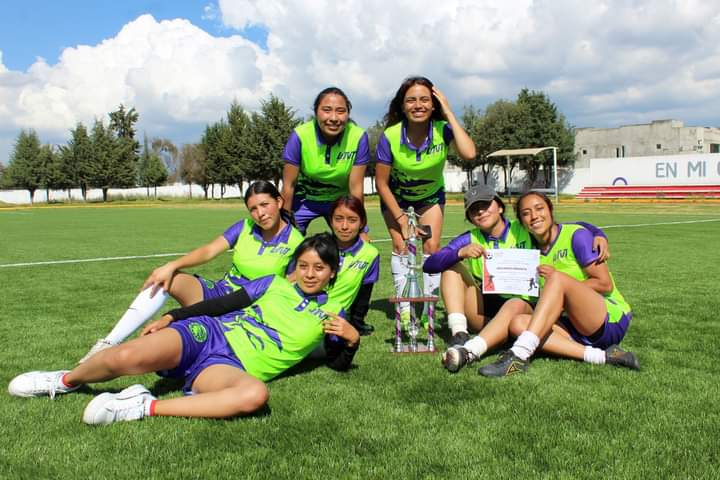

Me llamo Johaly Flores Palomares, cumplo el 13 de Mayo del 2004, tengo 20 año, mido 1.48 mtrs, soy signo Tauro, tengo el cabello color cafe con negro
Tengo diversos gustos como el color negro, azul, rosa, morado, mi equipo de futbol es el America, me gusta todo tipo de musica pero mi genero actualmente es pop el grupo de cd9
Mi Linea del Tiempo
2023 actualmente 2025
Inicio en la UTVT
Ingrese en el año 2023, tenia 18 años, la verdad no me gustaba mi carrera porque yo queria estudiar otra cosa empece a estudiar a agarrar el rollo mas que nada, creo que lo unico bueno era que podia jugar futboly que podia disfrutar, era una etapa tranquila, divertida, donde conoci personas, empezo a pasar el tiempo, los dias, los meses y si empece a agarrarle el gusto a mi carrera y ahi empezo lo bueno, aprendi temas que ni yo sabia que existian, empece a programar, a configurar, a realizar diversas actividades.

TSU en Area Infraestructura de Redes Digitales
Mi etapa de tecnica, fue muy linda porque inicie desde el 1er cuatrimestre, todo fue tranquilo divertido ya sabia algunas cosas, mi 2do cuatri fue algo tranquilo, me empezaba a gustar mi carrera, y empezaba a conocer mas personas, mi 3er cuatri fue mas dificil ya que me tocaba integradora 1, pero gracias a dios el equipo que tenia me ayudaba y concluimos exitosamente el cuatri, empezo mi 4to cuatri fue algo tranquilo segui mejorando y empeze a tener todo a mi favor, llego mi 5to cuatri otra vez integradora esta vez algo complicado se dividio el salon pero al final pudimos ambos equipos salir adelante y o sorpresa llega mi 6to cuatri y empiezo estadias, fue la mejor etapa me abrio muchas puertas conoci muchas mas personas, ingenieros, y conclui mi tecnico y estoy muy feliz porque me gusta la carrera y me siento feliz con lo que soy.

Ingenieria en Redes Inteligentes y Ciberseguridad
Mi carrera como ingenieria comienza en el 2024 en el mes de septiembre en el cuatri septimo puedo decir que amo mas mi carrera que es lo que esperaba, que me agrada todo el transcurso que he pasado y sabido llevar, este cuatri fue relagado algo pesado porque empezazmos implementacion de IAS pero logramos concluir este cuatri, estoy en 8avo cuatrimestre y puedo decir que me esta agradando mas que e conocido mas de mi carrera, nos fortalece mas como grupo y estamos dando todo de nosotros me faltan 2 cuatris mas y 1 de estadias pero vamos bien me agrada y puedo decir que ha sido lo mejor en estos 3 años 8 meses.

Mi pequeño yo en mi trayectoria Futbolista como Cuervo
Todo empezo un 6 de septiembre del 2023, donde represente en un torneo entre carreras a TIC donde
gracias a dios quedamos invictas y quedamsos en primer lugar, posteriormente fui convocada para poder
representar a la universidad ser una cuervo un 10 de noviembre del 2023, existian miles de emociones, el poder
representar tu universidad es increible, todas aportamos y salimos con el primero lugar en la deportiva
de lerma, posteriormente un 22 de febrero de 2024, volvieron a realizar el torneo entre carreras, donde volvi a
representar a TIC, donde esta vez fui capitana y guie a todas a conseguir un Bicampeonato y si salimos
invictas y con el trofeo que podria faltar un torneo para representar a la universidad en México un 3 de junio del
2024 soy muy feliz de poder representar de nuevo esta vez fue una semana llena de futbol, donde salimos con el segundo lugar
pero fuertes, un 12 de septiembre del 2024 toco representar de nuevo en la deportiva de lerma donde sacamos el primer lugar de
nuevo y por ultimo un torneo en almoloya un 13 de noviembre del 2024 donde salimos campeonas y de nuevo el primer lugar, se que
me sobra un año y vendran mas triunfos un TRICAMPEONATO sera?, pero feliz de conocer a chicas y compañeros de distintos lados.
SOY CUERVA, SOY UTVT.
Phone
(52) 722 716 9530Redes Sociales
Facebook: Johaly FlsInstragram: johalyfls